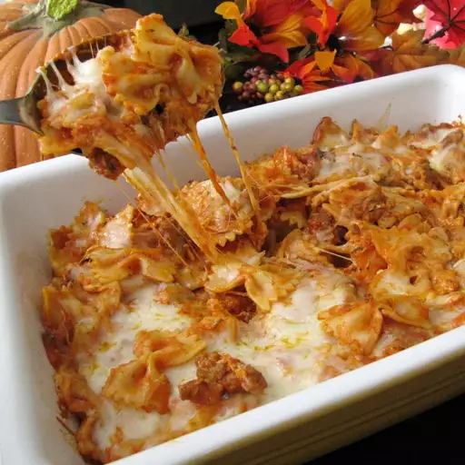

Bats and Cobwebs
t's like spaghetti using bow tie pasta. It is mixed together with mozzarella cheese cubes and baked in the oven. The bow tie pasta is the bats and the stringy, gooey mozzarella cheese is the cobwebs!t's like spaghetti using bow tie pasta. It is mixed together with mozzarella cheese cubes and baked in the oven. The bow tie pasta is the bats and the stringy, gooey mozzarella cheese is the cobwebs!

Ingredients
- 8 ounces farfalle pasta
- 1 pound ground beef
- 1 small onion
- 28 ounce jar pasta sauce
- 8 ounces mozzarella cheese
- 1/4 cup grated Parmesan cheese
Directions
- Preheat the oven to 400 degrees F (200 degrees C).
- Fill a large pot with lightly salted water, bring to a rolling boil over high heat. Stir in the bow tie pasta and return to a boil. Boil pasta, stirring occasionally, until cooked through but still firm to the bite, about 12 minutes. Drain well.
- Cook and stir ground beef and onion in a large skillet until beef is no longer pink, about 5 minutes. Drain fat. Stir in pasta sauce and bring to a boil. Reduce heat to simmer.
- Stir cooked pasta and half of the mozzarella cheese into the sauce; toss to combine. Transfer to a 2-quart baking dish. Top with remaining mozzarella and Parmesan cheese.
- Bake in the preheated oven until lightly browned and bubbly, 15 to 20 minutes.